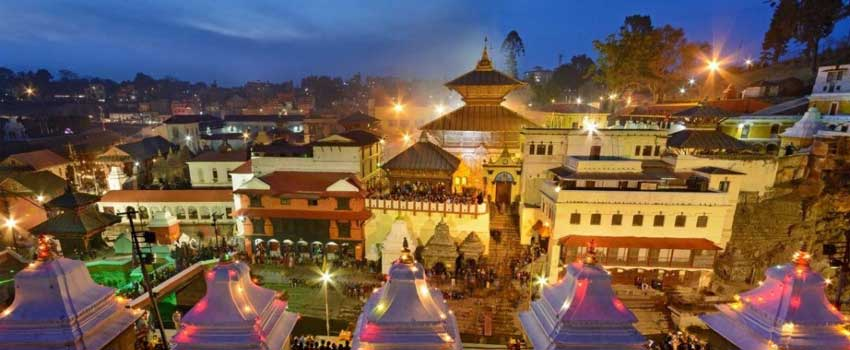

Maha Shivaratri is one of the major festivals of Nepal and literally means “Night of the Shiva”. It is celebrated on the 14th day of the dark fortnight of the Māgha month, as per the Hindu lunar calendar. It is believed that on this day, the stars in the Northern Hemisphere are at most optimum positions to help raise a person’s spiritual energy.It is also believed that the Shiva principle is most active on this day of the year. Maha Shivaratri is celebrated marking the convergence of Shiva and Shakti. Maha Shivaratri also celebrates the night when Lord Shiva performed the "Tandav", the cosmic dance.  Hundreds of thousands of devotees visit Pashupatinath Temple in Kathmandu, one of the holiest shrines of the Hindus. Pashupatinath is considered the Guardian and Protector of the Kathmandu Valley and Nepal.